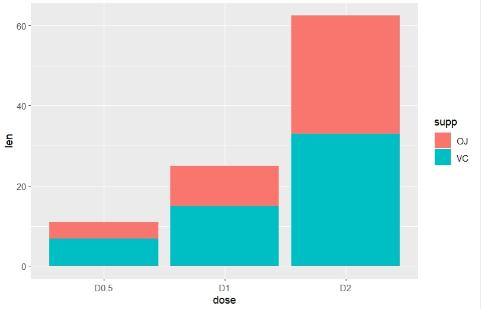
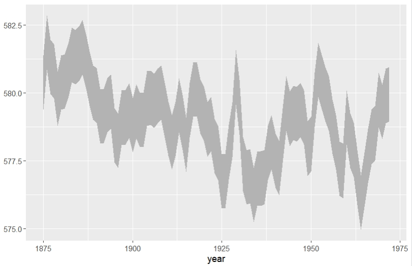
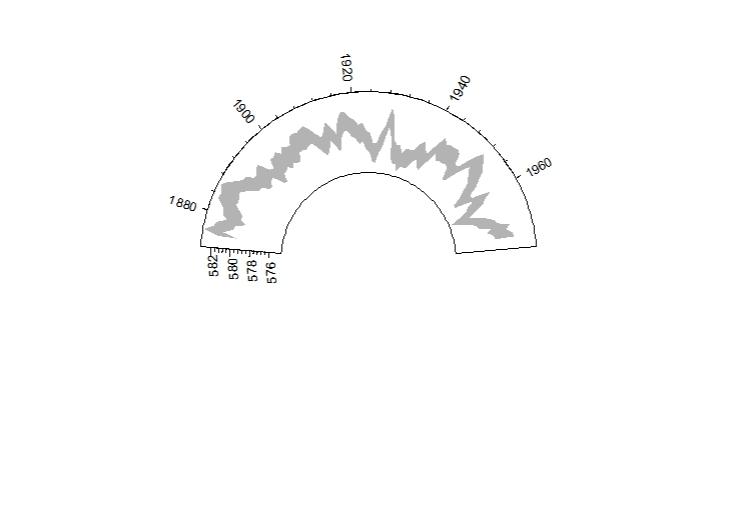
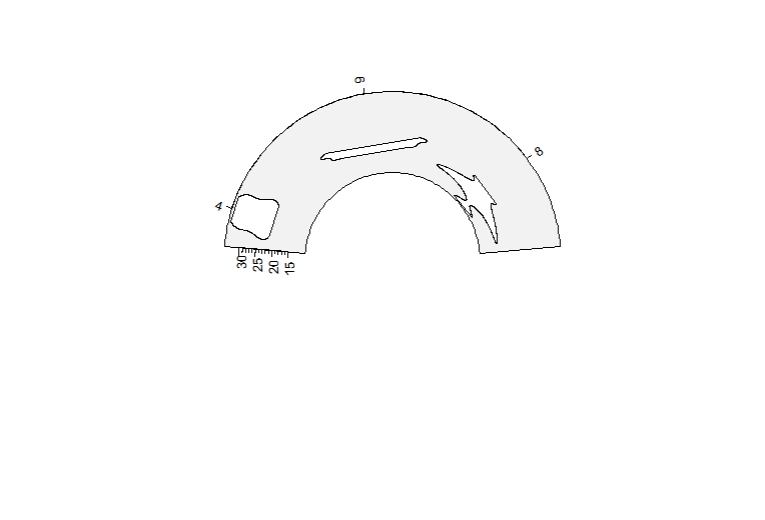
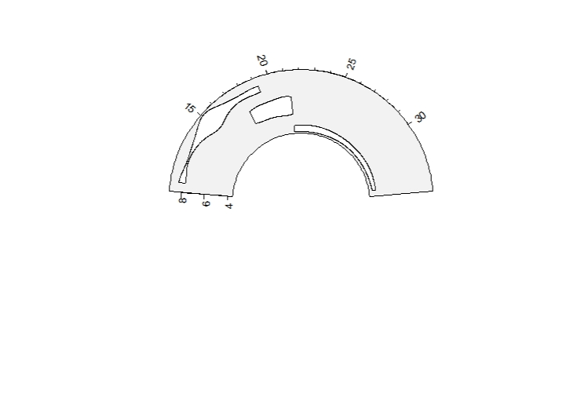
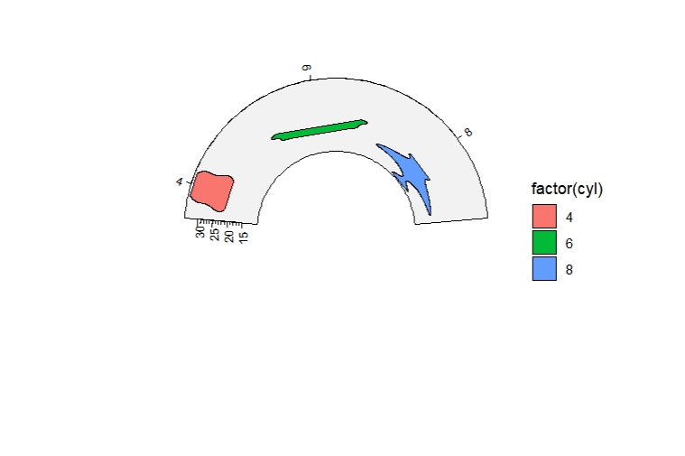

Chapter 7 ChipHeatmap based on grid
Here I developed ChipHeatmap and multiHeatmap functions to visualize the heatmap and profile plot based on grid and gtable R package. ChipHeatmap mainly draw single plot and multiHeatmap can combine multiple plot together. Now we show some examples here.
7.1 Load data
You can load the nomalized matrix data which from normalizeToMatrix/getTagMatrix/parseDeeptools output, here we use parseDeeptools output data which is produced by deeptools software:
7.2 Single heatmap visualization
Default output:
grid.newpage()
pushViewport(viewport(x = 0.5,y = 0.5,width = 0.5,height = 0.85))
ChipHeatmap(norm.mat = deep_mat[[1]])
popViewport() Rotate the xaxis:
Rotate the xaxis:
grid.newpage()
pushViewport(viewport(x = 0.5,y = 0.5,width = 0.5,height = 0.85))
ChipHeatmap(norm.mat = deep_mat[[1]],ht.xaxis.rot = 45)
popViewport() Control the sample label style:
Control the sample label style:
grid.newpage()
pushViewport(viewport(x = 0.5,y = 0.5,width = 0.5,height = 0.85))
ChipHeatmap(norm.mat = deep_mat[[1]],
sample.label = "jinitaimei",
label.rect.gp = gpar(fill = "pink"),
label.gp = gpar(fontface = "bold.italic"))
popViewport()
Control the panel space:
grid.newpage()
pushViewport(viewport(x = 0.5,y = 0.5,width = 0.5,height = 0.85))
ChipHeatmap(norm.mat = deep_mat[[1]],
panel.col.space = 0,panel.row.space = 0)
popViewport() Remove extreme values:
Remove extreme values:
grid.newpage()
pushViewport(viewport(x = 0.5,y = 0.5,width = 0.5,height = 0.85))
ChipHeatmap(norm.mat = deep_mat[[1]],quantile.threshold = 0.99)
popViewport() Control the heatmap colors:
grid.newpage()
pushViewport(viewport(x = 0.5,y = 0.5,width = 0.5,height = 0.85))
ChipHeatmap(norm.mat = deep_mat[[1]],
,quantile.threshold = 0.99,
ht.col = c("grey50","green","red"))
popViewport() Change the shape of the left anno bar:
Change the shape of the left anno bar:
grid.newpage()
pushViewport(viewport(x = 0.5,y = 0.5,width = 0.5,height = 0.85))
ChipHeatmap(norm.mat = deep_mat[[1]],draw.anno.left.shape = "rect")
popViewport() Change the legend position:
Change the legend position:
grid.newpage()
pushViewport(viewport(x = 0.5,y = 0.5,width = 0.5,height = 0.85))
ChipHeatmap(norm.mat = deep_mat[[1]],
quantile.threshold = 0.99,
legend.pos = "bottom")
popViewport()
Add profile plot:
grid.newpage()
pushViewport(viewport(x = 0.5,y = 0.5,width = 0.5,height = 0.85))
ChipHeatmap(norm.mat = deep_mat[[1]],draw.profile = T)
popViewport() Split the rows:
grid.newpage()
pushViewport(viewport(x = 0.5,y = 0.5,width = 0.5,height = 0.85))
ChipHeatmap(norm.mat = deep_mat[[1]],draw.profile = T,
row.split = row_split)
popViewport() Change the left annobar shape:
grid.newpage()
pushViewport(viewport(x = 0.5,y = 0.5,width = 0.5,height = 0.85))
ChipHeatmap(norm.mat = deep_mat[[1]],draw.profile = T,
row.split = row_split,
draw.anno.left.shape = "rect")
popViewport() Keep the cluster height size to be same:
Keep the cluster height size to be same:
grid.newpage()
pushViewport(viewport(x = 0.5,y = 0.5,width = 0.5,height = 0.85))
ChipHeatmap(norm.mat = deep_mat[[1]],draw.profile = T,
row.split = row_split,
keep.cluster.panel.same = T)
popViewport() Control the size of each panel:
grid.newpage()
pushViewport(viewport(x = 0.5,y = 0.5,width = 0.5,height = 0.85))
ChipHeatmap(norm.mat = deep_mat[[1]],draw.profile = T,
HeatmapLayout.params = list(heatmap.profile.h = 0.4,
heatmap.size = c(0.5,0.5)))
popViewport()
Change the left annobar direction:
grid.newpage()
pushViewport(viewport(x = 0.5,y = 0.5,width = 0.5,height = 0.85))
ChipHeatmap(norm.mat = deep_mat[[1]],
draw.anno.left.diretion = "up")
popViewport()
Change the profile line colors, cluster panel gap and left annobar colors:
grid.newpage()
pushViewport(viewport(x = 0.5,y = 0.5,width = 0.5,height = 0.85))
ChipHeatmap(norm.mat = deep_mat[[1]],
row.split = row_split,
keep.cluster.panel.same = T,
draw.profile = T,
draw.anno.left.shape = "rect",
anno.left.col = RColorBrewer::brewer.pal(3,"Set3"),
profile.line.col = RColorBrewer::brewer.pal(3,"Set3"),
cluster.gap = 0.05)
popViewport()
7.3 Plot getTagMatrix output
library(ChIPseeker)
library(TxDb.Hsapiens.UCSC.hg19.knownGene)
txdb <- TxDb.Hsapiens.UCSC.hg19.knownGene
files <- getSampleFiles()
seek_list <- lapply(4:5, function(x){
peak <- readPeakFile(files[[x]])
## The results of binning method and normal method are nearly the same.
tagMatrix_binning <- getTagMatrix(peak = peak, TxDb = txdb,
upstream = 3000, downstream = 3000,
type = "body", by = "gene",
nbin = 800)
})
grid.newpage()
pushViewport(viewport(x = 0.5,y = 0.5,width = 0.5,height = 0.85))
ChipHeatmap(norm.mat = seek_list[[1]],
heatmap_rank_method = "sum",
draw.profile = T)
popViewport()